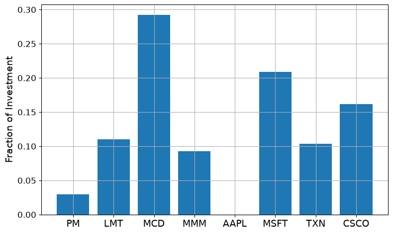

Robust Portfolio under Moment Uncertainty#
In this example, we will use RSOME to solve the portfolio problem discussed in [DY10], which is formulated as the following distributionally robust model
where \(\tilde{\pmb{\xi}}\in\mathbb{R}^n\) is a random vector representing the uncertain returns of \(n\) stocks. The objective of the model is to minimize the conditional value-at-risk (CVaR) of the investment return under the worst-case distribution \(\pmb{P}\) over the ambiguity set \(\mathcal{F}\), defined as below,
where \(\pmb{\mu}\) and \(\pmb{\Sigma}\) are the mean and covariance matrix, respectively, of the random return vector \(\tilde{\pmb{\xi}}\), estimated based on the stocks.csv dataset using the estimate_return() function imported from the preprocessing.py module. Details of the data preprocessing procedure can be found at Mosek Portfolio Optimization Cookbook.
import pandas as pd
from preprocessing import estimate_return
data = pd.read_csv('stocks.csv').set_index('Date')
mean, cov = estimate_return(data)
μ, Σ = mean.values, cov.values
In the subsequent numerical experiments, the conservatism parameters \(\gamma_1=0.25\) and \(\gamma_2=1.50\), and the confidence level for calculating the CVaR is \(1-\epsilon=0.95\).
γ1, γ2 = 0.25, 1.50
ε = 0.05
According to [DY10], the distributionally robust model is equivalent to the following convex optimization problem
The convex optimization problem is then implemented using RSOME with the code below.
from rsome import ro
import rsome as rso
from scipy.linalg import sqrtm
model = ro.Model()
n = len(μ)
x = model.dvar(n)
α = model.dvar()
Q = model.dvar((n, n))
q = model.dvar(n)
r = model.dvar()
t = model.dvar()
s = model.dvar()
model.min(r + t)
model.st(rso.schur(Q, q*0.5 + (1/ε)*x*0.5, r+(1-ε)/ε*α))
model.st(rso.schur(Q, q*0.5, r-α))
model.st(
t >= γ2*(Σ*Q).sum()
+ μ@Q@μ + μ@q
+ γ1**0.5*rso.norm(sqrtm(Σ)@(q + 2*Q@μ))
)
model.st(x >= 0, x.sum() == 1)
model.solve()
Being solved by Clarabel 0.11.1...
Solution status: Solved
Running time: 0.0157s
The objective value of the convex optimization problem is attained as below.
print(f'Objective value: {model.get():.4f}')
Objective value: 0.9333
In addition, we can also formulate the portfolio optimization problem as an RSOME dro model, where the ambiguity set is written as the following lifted version,
In the lifted ambiguity set \(\mathcal{G}\), \(\tilde{\pmb{U}}\in\mathbb{S}^n\) is introduced as an auxiliary variable, and the support set is equivalent to \(\left(\tilde{\pmb{\xi}} - \pmb{\mu}\right)\left(\tilde{\pmb{\xi}} - \pmb{\mu}\right)^{\top}\preceq \tilde{\pmb{U}}\) as a result of Schur Complements. Notice that this ambiguity set aligns with the event-wise ambiguity set described in The General Formulation for Distributionally Robust Optimization Models. Therefore, the distributionally robust model can be solved in a more concise and readable manner using the code below.
from rsome import dro
from rsome import E
import rsome as rso
from scipy.linalg import inv
model = dro.Model()
n = len(μ)
x = model.dvar(n)
α = model.dvar()
ξ = model.rvar(n)
U = model.rvar((n, n))
gset = model.ambiguity()
gset.suppset(rso.schur(U, (ξ - μ), 1))
gset.exptset(rso.quad(E(ξ) - μ, inv(Σ)) <= γ1,
E(U) == γ2*Σ)
model.minsup(α + (1/ε)*E(rso.maxof(-ξ@x - α, 0)), gset)
model.st(x.sum() == 1, x >= 0)
model.solve()
Being solved by Clarabel 0.11.1...
Solution status: Solved
Running time: 0.0163s
The objective is the same as the equivalent convex optimization problem.
print(f'Objective value: {model.get():.4f}')
Objective value: 0.9333
The optimal investment decisions are also the same for both approaches, and the results are visualized by the following code.
import matplotlib.pyplot as plt
plt.figure(figsize=(9, 5.5))
plt.bar(data.columns, x.get())
plt.ylabel('Fraction of Investment', fontsize=14)
plt.xticks(fontsize=14)
plt.yticks(fontsize=12)
plt.grid()
plt.show()

Reference